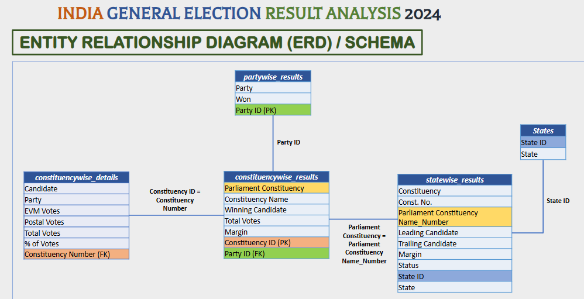

A data-driven overview of India's 2024 general election using SQL, Power BI, and Netlify
The data used in this project is publicly available on Kaggle:
This ER diagram shows the relationships between tables used in the 2024 Indian General Election analysis:

USE [Indian Election];
SELECT * FROM constituencywise_details;
SELECT * FROM constituencywise_results;
SELECT * FROM partywise_results;
SELECT * FROM statewise_results;
SELECT * FROM states;
SELECT DISTINCT COUNT(parliament_constituency) AS Total_Seats
FROM constituencywise_results;
SELECT s.state AS State_Name,
COUNT(cr.parliament_constituency) AS Total_Seats
FROM constituencywise_results cr
JOIN statewise_results sr ON cr.parliament_constituency = sr.parliament_constituency
JOIN states s ON sr.State_ID = s.State_ID
GROUP BY s.state
ORDER BY Total_Seats DESC;
-- NDA Total
SELECT SUM(CASE WHEN party IN (...) THEN [Won] ELSE 0 END) AS NDA_Total_Seats_Won FROM partywise_results;
-- INDIA Total
SELECT SUM(CASE WHEN party IN (...) THEN [Won] ELSE 0 END) AS INDIA_Total_Seats_Won FROM partywise_results;
-- Seats by party
SELECT party, won FROM partywise_results WHERE party_alliance = 'NDA' ORDER BY won DESC;
SELECT party, won FROM partywise_results WHERE party_alliance = 'I.N.D.I.A' ORDER BY won DESC;
ALTER TABLE partywise_results ADD party_alliance VARCHAR(50);
-- NDA
UPDATE partywise_results SET party_alliance = 'NDA' WHERE party IN (...);
-- I.N.D.I.A
UPDATE partywise_results SET party_alliance = 'I.N.D.I.A' WHERE party IN (...);
-- OTHER
UPDATE partywise_results SET party_alliance = 'OTHER' WHERE party_alliance IS NULL;
-- State-wise seats per alliance
SELECT s.State AS State_Name,
SUM(CASE WHEN p.party_alliance = 'NDA' THEN 1 ELSE 0 END) AS NDA_Seats_Won,
SUM(CASE WHEN p.party_alliance = 'I.N.D.I.A' THEN 1 ELSE 0 END) AS INDIA_Seats_Won,
SUM(CASE WHEN p.party_alliance = 'OTHER' THEN 1 ELSE 0 END) AS OTHER_Seats_Won
FROM constituencywise_results cr
JOIN partywise_results p ON cr.Party_ID = p.Party_ID
JOIN statewise_results sr ON cr.Parliament_Constituency = sr.Parliament_Constituency
JOIN states s ON sr.State_ID = s.State_ID
GROUP BY s.State
ORDER BY s.State;
-- Top EVM vote candidates
SELECT TOP 10 cr.Constituency_Name, cd.Candidate, cd.EVM_Votes
FROM constituencywise_details cd
JOIN constituencywise_results cr ON cd.Constituency_ID = cr.Constituency_ID
WHERE cd.EVM_Votes = (
SELECT MAX(cd1.EVM_Votes)
FROM constituencywise_details cd1
WHERE cd1.Constituency_ID = cd.Constituency_ID
);
This project analyzes the results of the Indian General Election 2024 using SQL for data processing and Power BI for visualization. The data includes state-wise and constituency-level performance by political parties, voter turnout trends, and seat share comparisons.